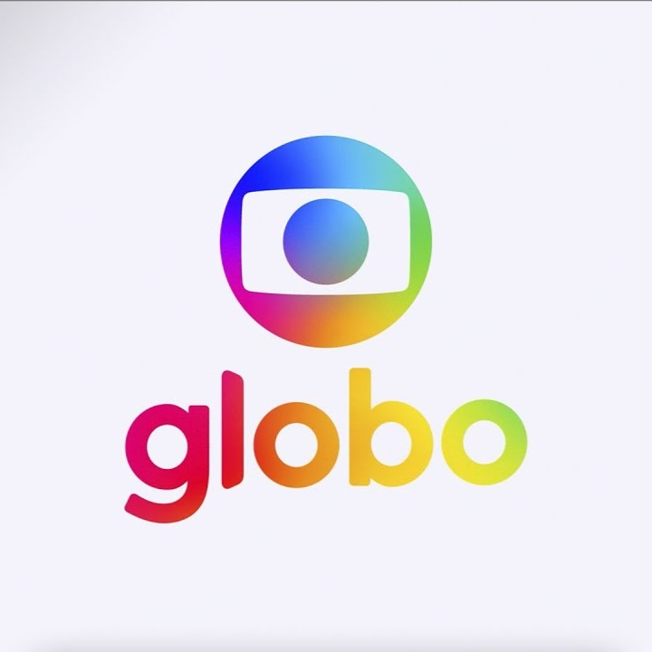

01 · Flagship case study · Globo
From manual production to 100+ videos a week.
How I helped shape an internal automation product that made high-volume branded content faster, more reliable, and easier to measure.

The challenge
A complex workflow with no room for error.
Globo’s video-autonomy team had to turn large volumes of inconsistent raw material into broadcast-ready branded videos in a short production window. The existing process relied on editors manually inserting assets, correcting formats, and exporting each variation.
The product work
Turn the hidden workflow
into a usable system.
Map the real constraints
I translated production bottlenecks, file inconsistencies, timing pressure, and quality risks into workflow requirements.
Shape the automation
I helped develop the Python/Nuke system, templates, naming conventions, folder hierarchy, and export controls.
Design for visibility
I built a data collection tool and reporting layer to show leadership weekly and monthly output, duration, and file size.
Keep improving the edges
I created a standardization tool for inconsistent source material and continuously identified holes, needs, and improvements.
The operating model
Automation only works when the workflow around it is clear.
The system was not just a script. It depended on consistent inputs, understandable settings, reliable handoffs, validation checks, and reporting that made the impact visible. My role sat between programming, design, production, and the people who had to use the system every day.
Raw assets → normalization → templates → exports → broadcast
Export controls · validation · reporting
What changed
More output.
Less fragile work.
The team reached more than 100 distinct videos per week, with peaks above 120, while a single operator handled the production system. Standardization reduced manual correction and helped protect branded-content quality under severe time pressure.
The product lesson
Build the interface around the person who has to recover when the system breaks.
The next version would bring the smaller tools into one guided experience. Internal products need the same care as customer-facing products: clear states, useful feedback, understandable settings, and a path back when something changes.
Keep exploring